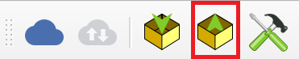

Siirto QFieldistä QGISiin
Kun olet käynyt maastossa ja kerännyt tietoja, voit siirtää tiedot takaisin (yleensä) alkuperäiseen QGIS-projektiin.
Yhdistä puhelin tietokoneeseen ja kopioi koko projektin kansio puhelimesta sijainnista drive:/Android/data/ch.opengis.qfield/files/QField tietokoneelle, vaikkapa sijaintiin kotihakemisto/QField/import (oletuspolku QFieldSync-lisäosalle, esim. C:\Users\käyttäjänimi\QField\import).
Avaa alkuperäinen QGIS-projektisi (eli ei se mikä löytyi puhelimesta) tietokoneella.
QFieldSync-lisäosan kautta valitse nyt Synkronoi QFieldistä (Synchronize from QField) tai vastaavasti työkalupalkista 
{kind=link}
Nyt valitset äsken puhelimesta kopioidun kansion. Nyt kentällä tallentamasi pisteet löytyvät QGISin projektissa. Jos lisäsit kuvia keräämiisi kohteisiin, löytyvät ne mobiililaitteelta tuodun projektikansion DCIM alikansiosta, QGISin attribuuttitaulusta löytyy vain viittaus tiedostonimeen.
Voit nyt muokata tietoja avaamalla attribuuttitaulukkoa. Voit myös lisätä uusia kohteita ja alueita tarvittaessa.
Kun olet mielestäsi valmis voit viedä tietoja ulos esimerkiksi .csv tai .xslx tiedostoina. Klikkaa hiiren oikealla haluamasi taso ja valitse "Vie" ja valitse haluamasi tiedostotyyppi.